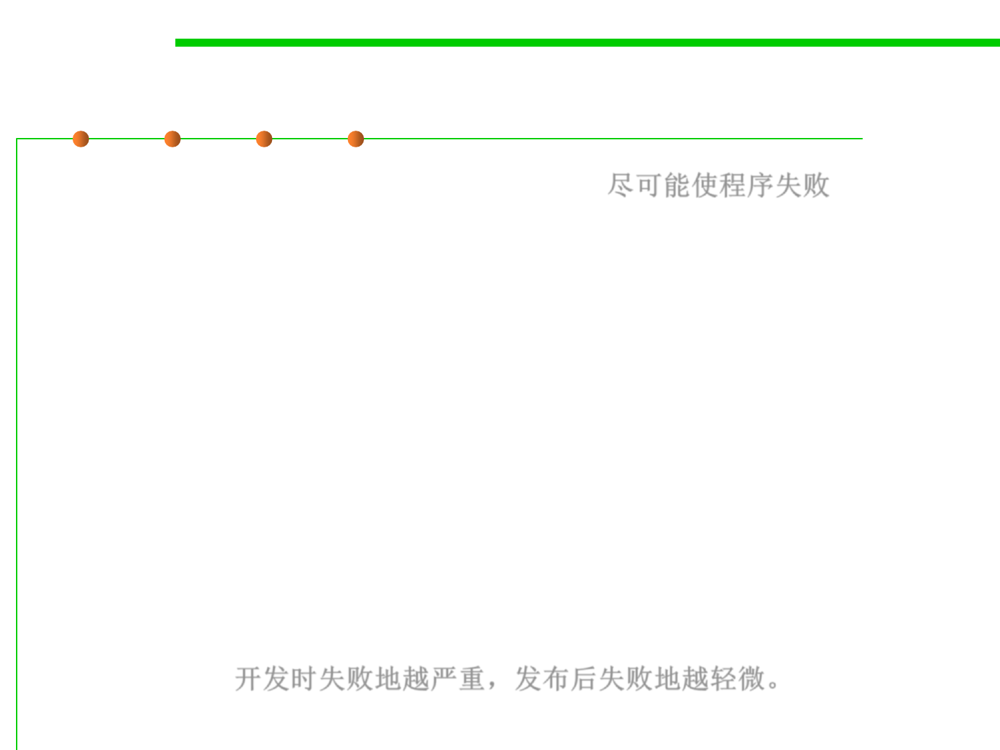

7.3 Assertions and Defensive Programming
Debugging Aids: Use Offensive Programming
▪ Some ways you can program offensively: 尽可能使程序失败
– Make sure asserts abort the program. Don’t allow programmers to get into
the habit of just hitting the ENTER key to bypass a known problem. Make
the problem painful enough that it will be fixed.
– Completely fill any memory allocated so that you can detect memory
allocation errors.
– Completely fill any files or streams allocated to flush out any file-format
errors.
– Be sure the code in each case statement’s else clause fails hard (aborts the
program) or is otherwise impossible to overlook.
– Fill an object with junk data just before it’s deleted
▪ Sometimes the best defense is a good offense.
▪ Fail hard during development so that you can fail softer during
production. 开发时失败地越严重，发布后失败地越轻微。